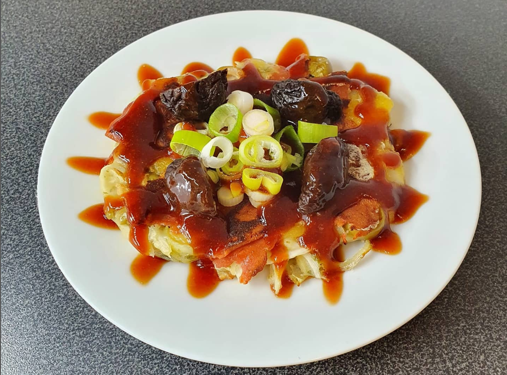

Okonomyaki

A savory japanese pancake with cabbage and other toppings of choice
A savory japanese pancake topped with whatever ingredients you desire.
Often seen at japanese street food shops.
Ingredients
For 3 large Okonomyaki
- 500g cabbage
Batter
- 160g wheat flour
- 40g soy protein isolate
- 1Tbsp salt
- 1Tbsp sugar
- 5g baking powder
- ~250ml water
Toppings
- vegan cheese
- vegan ham
Directions
- Thinly slice the cabbage with a mandolin
- Mix the batter ingredients to a smooth dough. Then add the cabbage and let sit for 30 minutes.
- Then heat a pan over medium heat and fry part of the batter for about 5 minutes on each side.
- Before flipping, add topping of your choice. I used vegan ham and cheese
- When done, drizzle with a sauce of your choice